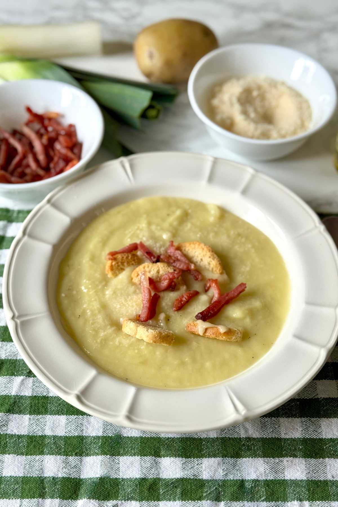

Creamy Leek And Potato Soup
Go back

Description
Leek and potato soup is a classic comfort food with a delicate flavor and a naturally creamy texture. Simple,
wholesome, and deeply satisfying, it's one of those vegetable soups that make winter meals feel warmer and more
inviting.
This Italian-style leek and potato soup is made with just a few basic ingredients, yet it brings out all the
goodness and nutritional value of winter vegetables. Light but nourishing, it's perfect when you want an easy meal
that is comforting without being heavy.
Ingredients
For soup
- 400 g (14 oz), about 2 medium potatoes
- 1 liter (about 4 cups) vegetable broth
- Freshly grated Parmigiano Reggiano, to taste
- 3 tablespoons extra virgin olive oil, plus more to serve
- Fine salt, to taste
For serving
- Speck, cut into strips, to taste. If speck is not available, use smoked pancetta or bacon
- Crispy bread croutons, to taste
Steps
- Wash and clean the leeks, trimming off the roots and the dark green parts. Remove any tough outer layers,
then slice the leeks into rounds that are not too thin. Place them in a large pot.
- Add the extra virgin olive oil and cook the leeks over medium heat for a few minutes, stirring often, until they
begin to soften without browning.
- Meanwhile, peel the potatoes and cut them into small cubes. Cutting the potatoes evenly helps them cook
faster and more uniformly.
- Once the leeks are soft and fragrant, add the diced potatoes to the pot. Stir well and let them cook together
for a
couple of minutes so they absorb the flavor of the leeks.
- Pour in the vegetable broth and fully cover the vegetables. Bring to a gentle boil, then lower the heat
and simmer for about 30 minutes, or until the potatoes are very tender when pierced with a fork.
- Remove the pot from the heat and blend the soup directly in the pot using an immersion blender until
smooth. Season with salt to taste.
NOTE: For an extra creamy texture, blend the soup thoroughly. For a more rustic consistency, blend it briefly,
leaving some small pieces of vegetables.
- Cut the speck into strips and toast them in a small pan over medium heat for a few minutes, until slightly
crispy.
- Serve the leek and potato soup hot in individual bowls. Finish with a drizzle of extra virgin olive oil, freshly
grated Parmigiano Reggiano, the crispy speck strips, and some bread croutons.